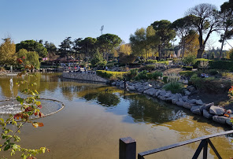

Balıkesir ilinin büyük bir kısmı Güney Marmara’da yer almakla
birlikte, hem Marmara hem de Ege Bölgesi’nde toprakları bulunmaktadır.
Doğuda Bursa, Kütahya; güneyde İzmir, Manisa; batıda Ege Denizi,
Çanakkale ve kuzeyde Marmara Denizi ile çevrilidir. 20 ilçesi bulunan
ve büyükşehir statüsünde olan Balıkesir’in nüfusu son sayıma göre
1.226.575 olmuştur. Tarih boyunca bir geçiş bölgesi niteliği taşıyan
topraklarda kurulmuş olan Balıkesir, iki ayrı denize kıyısı olan bir
yerleşim alanıdır. Türkiye’nin ekonomik açıdan gelişmiş illerinden
biri olan Balıkesir’in, gıda, tarım, hayvancılık, ormancılık, madencilik
ve sanayi dalları ile ülke ekonomisindeki önemi büyüktür. Ticaret ve turizm
ise ilin ekonomisinde ayrıcalıklı bir yer tutar.
Atatürk Parkı

Atatürk Parkının bu yere inşa edilmesi kararı, 24 Haziran 1934 tarihinde İran Şahı Rıza
Pehlevi ile birlikte yaptığı Balıkesir ziyareti sırasında Atatürk tarafından verilmiştir
2007 yılında yeniden düzenlenen park, bir büyük yapay gölet ve bu manzaraya bakış
sağlayan bir seyir terası ve kafe, çiçek
ve kaya bahçeleri, çocuklar için oyun alanları ve gençler için kaykay pisti, açık ve
kapalı sergi alanları, alışveriş birimleri
ile tenis kulübü bulunmaktadır.
Balıkesir'in Tatil Yerleri
Ayvalık
Marmara Bölgesi'nde bulunan ve Ege Denizi'ne kıyısı olan Ayvalık, Balıkesir'in en önemli tatil
beldelerinden bir tanesidir. Midilli Adası
ile karşı karşıya olan Ayvalık, sadece Balıkesir halkının değil tüm Marmara nüfusunun da tatil
için çokça tercih ettikleri bir merkezdir.
Balıkesir Merkezine yaklaşık 2 saatlik bir mesafede bulunan Ayvalık, muhteşem denizinin yanında
tam bir temiz hava deposudur. Cunda Adası,
Şeytan Sofrası, Sarımsaklı ve Ayvalık Çarşısı bölgenin önemli gezi durakladır.
Edremit Körfezi
Kaz Dağları eteklerinde, Ege Denizi'nin tüm ihtişamına şahit olabileceğiniz en güzel yerlerden
biri Edremit Körfezi. Termal, dağ ve deniz
turizmini birleştirerek dünyaya doğru yola çıkan Edremit, doğal güzelliklerinin yanı sıra birçok
tarihi mekana da ev sahipliği yapıyor.
Tarih ve doğa severlerin 12 ay boyunca tercih edebileceği turizm cenneti olan Edremit Körfezi,
muhteşem atmosferi ile ziyaretçilerine görsel
şov sunmaktadır. Her metrekaresinde ayrı bir doğal güzellik barındıran Edremit'te Hasanboğuldu
Şelalesi, Çamlıbel Köyü gibi mutlaka
görülmesi gereken çok yer var.
Erdek - Avşa Adası
Sadece Balıkesir halkının değil İstanbul, Bursa halkınında yaz tatilinde denizle buluşma
noktası olan Erdek, Balıkesir tatili için en
çok tercih edilen tatil noktalarından bir başkasıdır. Yaz aylarında oldukça popüler olan Erdek
ve Avşa Adası plajları ve cazip doğal
güzellikleri ile ziyaretçilerini büyülemektedir.
Cunda Adası
Ege Bölgesi'nde Bozcaada, Bodrum ve Alaçatı kadar popüler bir tatil beldesi olan Cunda Adası,
Balıkesir'in Ayvalık ilçesinde
ziyaretçilerini büyüleyen bir atmosfere sahiptir. Rum mimari yapısı ve Yunan Mutfağının eşsiz
lezzetlerini bulursunuz.
Sarımsaklı
Balıkesir'in Ayvalık ilçesinde bulunan Sarımsaklı, Ege Bölgesi'nin en uzun plajlarından bir
tanesine sahiptir. Mükemmel havası,
tarihi Sarımsaklı Evleri ve hareketli bir gece hayatına sahiptir.
Balıkesir'de Gezilecek Yerler
Antandros Antik Kenti
M.Ö. 7. ve 8. yüzyıllardan bu yana Balıkesir tarihinde bulunan Edremit ilçesi ve İda Dağları
eteklerinde yer almaktadır Antandros
Antik Kenti. Mozaikleriyle ünlü Antandros Antik Kenti, Truva Savaşları'nı anlatan belgelerde de
bahsedilmiştir.
Kaz Dağı (İda Dağı)
Balıkesir ve Çanakkale illeri arasında yer alan Kaz Dağları, Balıkesir'in en önemli gezi
yerlerinden biridir. Doğa severlerin mola
yeri olan Kaz Dağları'ndan Yunan mitolojisinin birçok mitinde de bahsedilmektedir. Doğa ile
tarihi iç içe bulacağınız Kaz Dağları,
Balıkesir tatilinizde mutlaka görülmesi gereken yerlerin başında gelmektedir. Trekking
meraklıları için mükemmel bir yerdir.
Manyas Kuş Cenneti
Balıkesir'in Bandırma ilçesinde bulunan Manyas Kuş Cenneti, Balıkesir'in en çok ziyaret edilen
yerlerinden bir başkasıdır. Göçmen
kuşların, göç sırasında durduğu alan olan Manyas Kuş Gölü, 239 kuş türüne ev sahipliği
yapmaktadır.
Gönen Mozaik Müzesi
Türkiye'de en çok mozaik bulunan müze olma özelliği taşıyan Gönen Mozaik Müzesi, Roma, Bizans
ve Osmanlı dönemlerine ait çeşitli
mozaik eserlere sahiptir.
Kepekler Kaplıcaları
Balıkesir'in Susurluk İlçesi'ne 20 km mesafede bulunan Kepekler Kaplıcası, önemli şifalı sulara
ev sahipliği yapmaktadır. Romatizma,
nevralji, Banyo tedavisi, polinevrit, nevrit, çocuk felçleri ve ankilozlar ile kadın
hastalıkları için tavsiye edilen şifalı suları
Balıkesir Termal turizmi için oldukça önemli bir yere sahiptir.